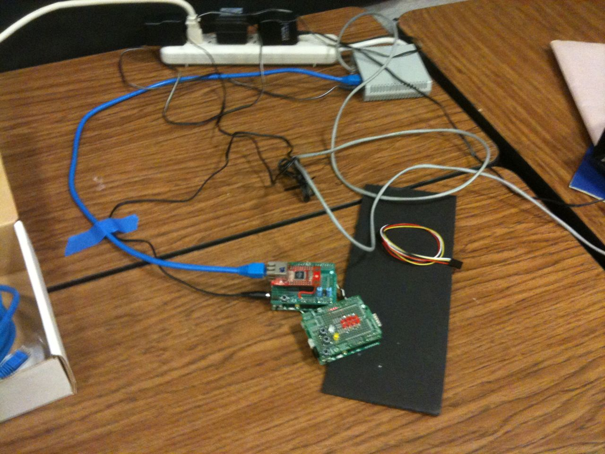
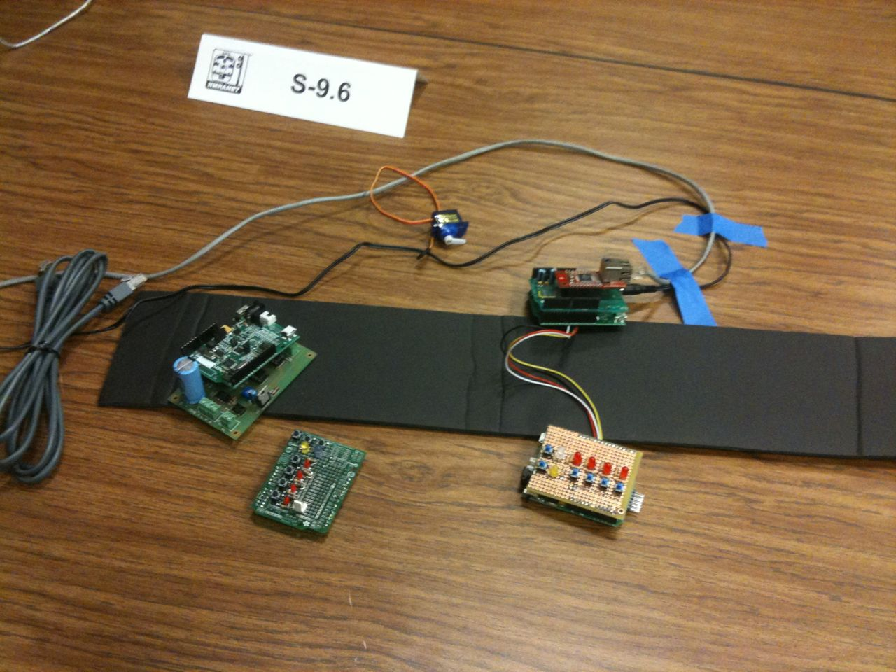
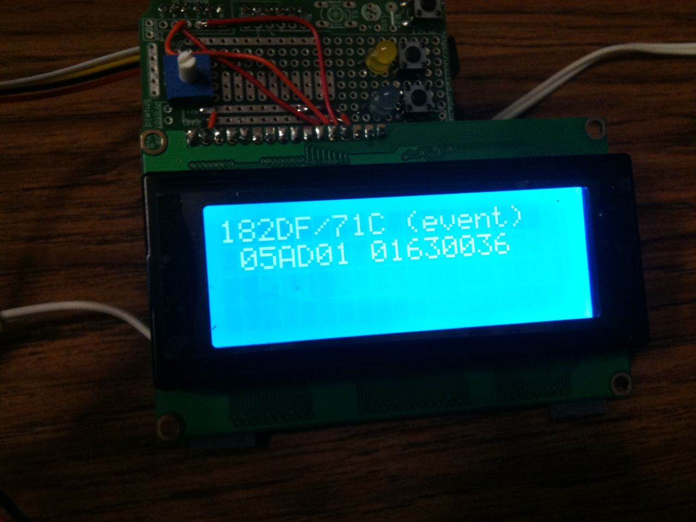
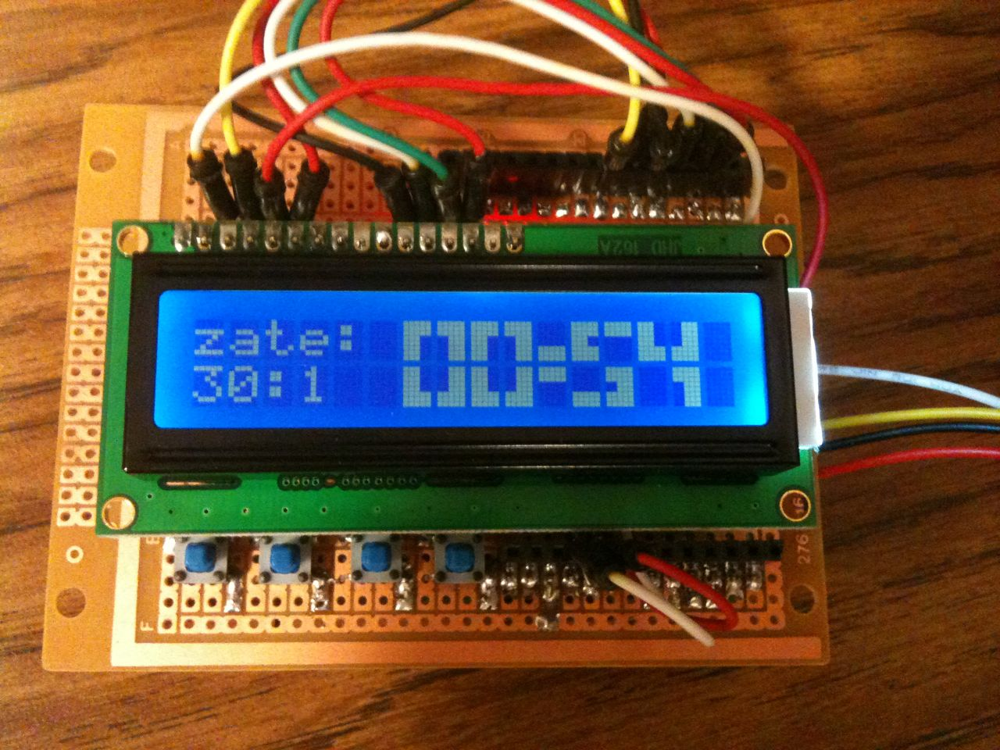
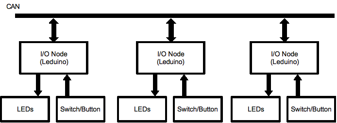
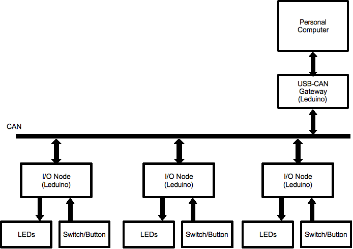
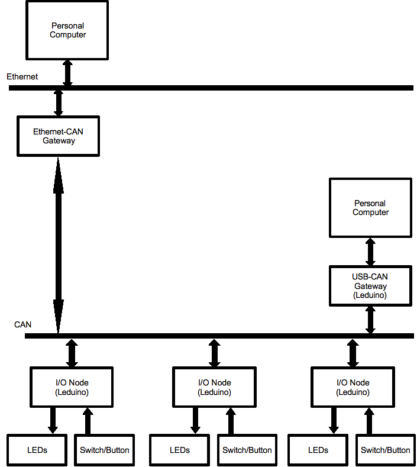
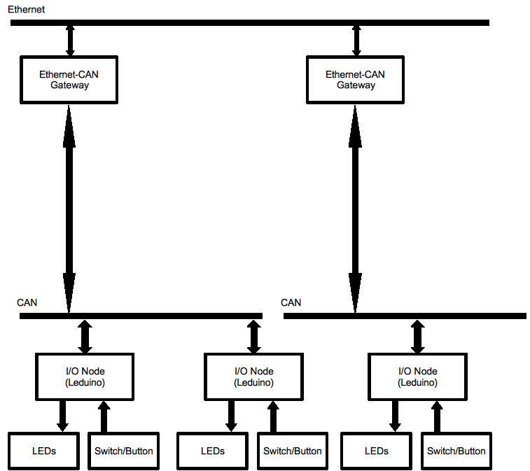

The OpenLCB group did a day's worth of demonstrations of OpenLCB at the NMRA 2010 convention in Milwaukee.
There are some YouTube videos available:
The demo setup, showing one of the two set-ups. This one
included a bus monitor node,
a fast-clock node, a fast-clock
display node, a basic node and a multi-LED node.
Basic module configuration (no computer involved), showing
how to teach consumers
to respond to producers.
More advanced configuration (still no computer involved),
showing different and
extended learning sessions.
There were two demo setups for different uses. One had five nodes
on a single CAN bus, shown above.
The other had two short CAN
segments, each with one producer/consumer node, connected via two
OpenLCB
Ethernet bridges.


(The two modules on the left in the right picture are CBUS
hardware)
In addition to producer/consumer modules doing all the usual things over CAN and Ethernet, we also showed:
A bus monitor module that showed events of interest.

A fast clock that was emitting events that could drive
consumer actions, plus a
display on another node, shown here.

JMRI support, including operation and configuration, with the
computer connected
either through a standard USB adapter or via
an Ethernet connection (although we didn't
leave the computer
connected because we wanted people to understand that OpenLCB
doesn't require a computer.)
Prototype code for these is available.

Show
that initialization of multiple nodes doesn't require anything. Add
the 3rd node “out of box”, show that it starts up and
can be easily configured.

Add a computer via USB connection and show that everything still works. Demonstrate computer responding to hardware events, and hardware responding to computer events. Plan to do this demonstration second, as the first example doesn't need a computer in any way.

Demo Ethernet connection by adding a computer via ethernet-CAN adapter; show that's also plug-and-play.
Diagram shows two computers because the Ethernet connection is added to Demo 3 without reconfiguring anything.

Two CAN segment communicating over Ethernet without a PC doing any intervention, e.g. for a modular layout setup. Want to script the demo to make it clear that we're combining independent systems, which can still interoperate. That might need two nodes on each CAN segment, to show they don't have to be reprogrammed.
Site hosted by